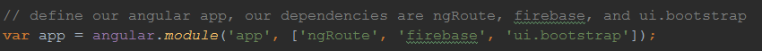
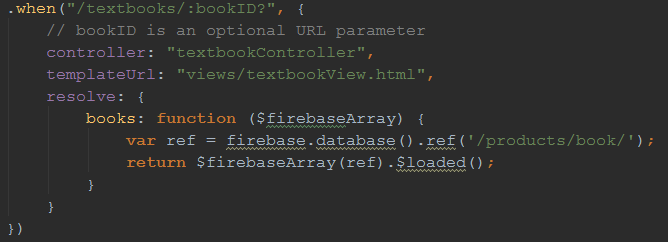
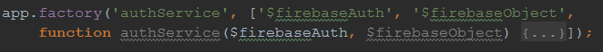
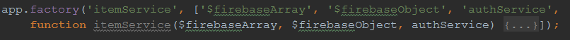

The MU - Web Documentation
Created: 3/8/2017
By: Joe Kuczek And Johnathon Pine
Index
- File Structure and Design
- Angular Configuration
- Services
- Controllers
- Views
- Additional References
A) File Structure and Design - top
We are using AngularJS as a front-end framework for API connection, web services, routes, and Javascript logic organization. We are using bower as a package manager for giving us the latest most-stable versions of Angular, Bootstrap, and jQuery. We are using a model-view-controller design pattern, depdency injection for Angular services, and a form of the Observer pattern for attaching observers/listeners on Firebase data. The following list shows our files. All web files are written in JavaScript, excluding the views, which are written in HTML.
- Header
- headerController (app.js)
- index.html (header view)
- Services
- authService.js
- itemService.js
- Controllers
- adminController.js
- foodController.js
- furnitureController.js
- mainController.js
- profileController.js
- textbookController.js
- ticketController.js
- Views
- adminView.html
- foodView.html
- furnitureView.html
- mainView.html
- profileView.html
- textbookView.html
- ticketView.html
- Angular Configuration
- app.js
- filters.js
- routes.js
- Bower Components
App.js contains all the main config for connecting to Firebase. Each controller has a corresponding view, the controller provides data to the view via the $scope variable. Services can be injected into each controller depending on the needs of the controller.
B) Angular Configuration - top
app.js
In this file, we initialize our connection to Firebase by providing our custom API key. We also initialize our Angular module. It is important that this file is included in index.html before the rest of the controller files. This is because we initialize controllers using the module. This file also contains the headerController which handles variables for the navigation bar and authentication over each page. Our Angular app is defined in the code below:

filters.js
In this file we provide different functions for formatting data from Firebase. The functions are as follows:
- capitalize (word)
- Description: Capitalizes the first letter of each word in the String.
- Params: word - String - The string variable to be capitalized.
- Returns: String - The capitalized string.
- emailToNetID (email)
- Description: Converts an ISU email to net-id by removing @iastate.edu.
- Params: email - String - The email to be converted.
- Returns: String - The converted net-id.
routes.js
This file contains all of our page and URL routing. If a client hits a URL, we need to tell them what view they should see and which controller we should use. We can also resolve variables so that they are immediately available upon page load (necessary for usage of itemService). We can also provide optional parameters in our URLs. An example of a routing configuration is seen below:

C) Services - top
authService
This service provides functions necessary methods for Authentication. The service injects the $firebaseObject which is used for Firebase database operations. It also injects the $firebaseAuth service which is used for handling Firebase authentication. Firebase handles all session logic for us, so we don't need to store anything on our server.

The service's functions are as follows:
- authenticate ():
- Description: Authenticate the client by using the Firebase Google Authentitcation pop-up.
- Returns: JSON - Firebase user data on success, nothing on error.
- getCurrentAuth ():
- Description: Provides the current $firebaseAuth object. We can use the $firebaseAuth to create asynchronous function calls such as $onAuthStateChange.
- Returns: $firebaseAuth - Firebase Auth object for current user.
- getUser ():
- Description: Return the current status of the user in JSON data.
- Returns: JSON - Current user status and information.
- setScope (scope):
- Description: Updates the passed in $scope variable with the authenticate function, signOut function, and $firebaseAuth variable.
- Params: scope - JSON Object - The $scope variable to be updated
- signOut ():
- Description: Signs the current user out of Firebase.
itemService
This service provides functions necessary for managing 'items' from Firebase. Items can be defined as textbooks, tickets, food, and misc. To first use the service, call the setup function at the very top of the controller. Since we are making asynchronous calls, some data will not be available upon page load. To fix this, we use the $loaded function ($firebaseArray) inside routes.js to resolve the data as we are loading the webpage. We need to inject authService into itemService so that we can obtain the user ID for retrieving/updating items.

The service holds the following variables:
- url: String - Mapping to Firebase data we want to use.
- items: $firebaseArray - Contains all the items for the specified URL.
- itemName: String - Name of the item, used for Firebase identifier in the set() method.
The service's functions are as follows:
- all ():
- Description: Returns all the current items as a listing.
- Returns: $firebaseArray - Returns the current items (tickets, textbooks, furniture, etc.)
- add (item):
- Description: Adds the data held in variable item to Firebase. Generates a new key for storing the data.
- Params: item - JSON - Contains the data to be added into Firebase.
- get (itemID):
- Description: Returns the item data from the database at the key itemID.
- Params: itemID - String - The ID of the item to be pulled from Firebase.
- Returns: JSON - Object with data for the item.
- remove (item):
- Description: Deletes the Firebase key that is equivalent to item.
- Params: item - JSON Object - The item we wish to remove.
- set (item, itemID):
- Description: Updates the object at itemID with the data in the item object.
- Params: item - JSON Object - New item data to be added.
itemID - String - The key of the item to be updated.
- setup (uri, name, scopeItems):
- Description: Setup the URL, itemName, and items variables. This is similar to a constructor.
- Params: uri - String
name - String
scopeItems - $firebaseArray
D) Controllers - top
Below are the main controllers for our views:
• adminController.js
app.controller
scope = {}
Description: Admin Controller Page used for pulling in data from firebase database.
• foodController.js
app.controller
scope = {}
Description: Food Controller Page used for pulling in data from firebase database.
• FurnitureController.js
app.controller
scope = {}
Description: Furniture Controller Page used for pulling in data from firebase database.
• mainController.js
app.controller
scope = {}
Description: Main Controller Page used for pulling in data from firebase database.
• profileController.js
app.controller
scope = {}
Description: Profile Controller Page used for pulling in data from firebase database.
• textbookController.js
app.controller
itemService.setup()
Setup our items service with a database URL, item name, and item array
books variable resolved on the route, resolved variables are only available
in the controller, so we need to update our singleton service by passing books array
scope = {book}
Vars: {addBook, Validate, bookID, setBook}
addBook = Adds a book to the array of books that get listed to the page.
Validate = Checks to make sure all the critera for the current book being added is correct
bookID = hooks onto url of the book
setBook = Used to update a book in the array
Description: TextBook Controller Page used for pulling in data from firebase database.
• ticketController.js
app.controller
scope = {}
Description: Ticket Controller Page used for pulling in data from firebase database.
E) Views - top
Our views are separated into different .html files under the views folder. Each item view technically contains two separate views, the edit view and the list view. The views pull in scope data from the controllers to display formatted data to the user. The following Bootstrap CSS classes have been proven to be the most useful during UI development:
- container - Groups and formats elements together.
- row - Create a new row for placing elements.
- col-ss-xx (example: col-md-5) - Place items using custom column sizes and grid formatting.
- form-group - Format items together inside of an HTML form.
- table table-striped - Create a neat striped Bootstrap table.
F) Additional References - top
Team GB-4 (117)
Go To Index